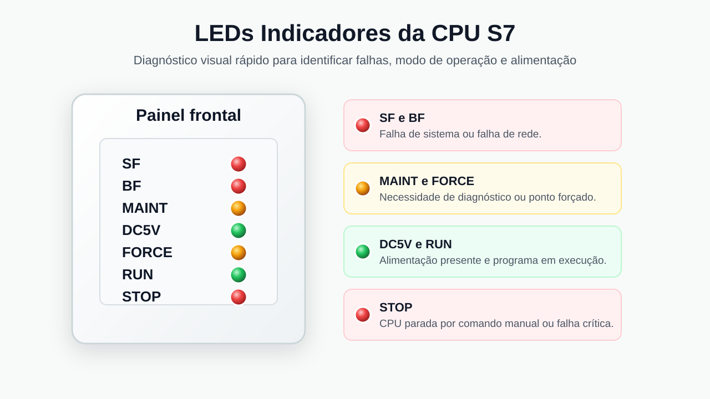

Introdução
As CPUs da família Siemens S7 possuem uma série de LEDs indicadores localizados na parte frontal do módulo. Esses LEDs funcionam como um sistema de diagnóstico visual, permitindo que o técnico identifique rapidamente o estado operacional do CLP e possíveis falhas. Cada LED possui uma cor específica, um significado definido e uma relação direta com o estado da CPU ou da rede. O entendimento correto desses indicadores é essencial para manutenção industrial, pois permite uma triagem inicial antes mesmo de acessar o software de programação ou diagnóstico.

Em uma CPU típica, os LEDs mais comuns são SF, BF, MAINT, DC 5V, FORCE, RUN e STOP. O LED SF, ou System Fault, é vermelho e indica falha de sistema. O LED BF, ou Bus Fault, também é vermelho e indica falha de comunicação em rede. O LED MAINT é amarelo e sinaliza necessidade de manutenção ou diagnóstico. O LED DC 5V é verde e indica que a alimentação interna da CPU está presente. O LED FORCE é amarelo e indica que algum ponto de entrada ou saída está forçado via software. O LED RUN é verde e indica que a CPU está executando o programa. O LED STOP é vermelho e indica que a CPU está parada.
SF: Falha de Sistema
O LED SF indica falha no sistema. Essa falha pode ser causada por erro de software, programação incorreta, erro de hardware, falha em módulo, falta de alimentação em algum módulo ou configuração incorreta. Quando esse LED está aceso, a CPU está informando que existe uma condição anormal que precisa ser investigada. O SF não aponta sozinho a causa exata, mas indica que o diagnóstico deve começar pela análise dos módulos, da alimentação, da configuração de hardware e do programa carregado na CPU.
Um exemplo prático ocorre quando há um módulo de entrada digital conectado à CPU, mas a fonte de alimentação desse módulo está desligada. A CPU tenta manter comunicação com o módulo, porém detecta que ele não responde corretamente ou não está em condição operacional. Como resultado, a comunicação com o módulo falha e o LED SF acende. Nesse caso, a interpretação correta é investigar o hardware, conferir a alimentação externa, verificar o encaixe do módulo e analisar a configuração no software.
BF: Falha de Rede
O LED BF indica erro na comunicação de rede. Esse erro pode ocorrer por cabo desconectado, conector mal encaixado, endereço duplicado, falha em rede Profibus, falha em rede MPI ou problema de parametrização dos dispositivos. Quando o BF acende, o foco do diagnóstico deve ser a comunicação entre a CPU e os demais equipamentos conectados à rede.
Um exemplo comum é a duplicidade de endereço. Se a CPU estiver configurada com endereço 2 e outro módulo ou processador de comunicação também estiver configurado com endereço 2, ocorre conflito de endereço. Como dois equipamentos tentam ocupar a mesma identificação lógica na rede, a comunicação deixa de ser confiável e o LED BF acende. Outro exemplo é a desconexão física de um cabo entre a CPU e um módulo remoto. Nesse caso, a CPU deixa de enxergar o dispositivo esperado e sinaliza falha de barramento.
MAINT: Necessidade de Manutenção
O LED MAINT é amarelo e indica que a CPU necessita de diagnóstico ou manutenção. Quando esse indicador acende, a CPU pode não estar operando de forma ideal ou pode ter detectado uma condição interna que exige atenção. Embora seja uma situação menos frequente que SF ou BF, deve ser tratada com seriedade, pois pode indicar falha interna, necessidade de inspeção ou condição preventiva antes de uma parada mais crítica.
DC 5V: Alimentação Interna OK
O LED DC 5V é verde e indica que a alimentação de 24 V está presente e que a fonte interna da CPU está funcionando corretamente. Se esse LED estiver apagado, a primeira verificação deve ser a alimentação externa da CPU, seguida pela análise de fusíveis, conectores, fonte do painel e possíveis interrupções no circuito de alimentação. Em diagnóstico de campo, esse LED é um dos primeiros pontos a observar, porque sem alimentação adequada a CPU não terá condição de executar o programa ou comunicar corretamente.
FORCE: Modo Forçar
O LED FORCE acende quando algum ponto está forçado via software. Forçar significa impor um valor lógico 0 ou 1 a uma variável, entrada ou saída, ignorando temporariamente o valor real do sinal físico. Esse recurso é útil em testes, simulações e comissionamento, mas deve ser usado com cautela, pois pode alterar o comportamento real da máquina ou do processo.
Um exemplo simples ocorre quando a entrada física I0.0 está em 0 V, portanto em nível lógico 0, mas o programador força essa entrada para nível lógico 1 por meio do software. A CPU passa a interpretar a entrada como ativa, mesmo que o sinal físico real esteja desligado. Nessa condição, o LED FORCE acende para alertar que existe uma intervenção artificial no comportamento normal das entradas ou saídas.
RUN: CPU Executando
O LED RUN verde indica que a CPU está executando o programa. Quando o RUN está aceso e os LEDs SF, BF e STOP estão apagados, a interpretação geral é de operação normal. Isso significa que o programa está sendo processado, o ciclo de varredura está ativo e não há falha crítica impedindo o funcionamento do CLP. Em uma condição saudável, espera-se observar RUN aceso, SF apagado, BF apagado e STOP apagado.
STOP: CPU Parada
O LED STOP acende quando a CPU está parada. Isso pode ocorrer por ação manual, quando a chave seletora ou comando de operação coloca a CPU em STOP, ou por uma falha grave que impede a execução do programa. Em uma situação automática, um erro crítico de hardware ou software pode fazer com que a CPU saia de RUN e entre em STOP para proteger o processo ou evitar execução incorreta.
Em um exemplo industrial, se uma planta apresenta STOP aceso, SF aceso e RUN apagado, o diagnóstico provável é uma falha grave de hardware ou software que levou a CPU automaticamente para STOP. O fluxo de diagnóstico deve começar pela verificação do LED SF, seguir pela conferência dos módulos, depois pela análise da rede e, por fim, pela verificação do programa e das mensagens de diagnóstico no software.
Resumo dos LEDs
O LED SF, vermelho, indica falha de sistema. O LED BF, vermelho, indica falha de rede. O LED MAINT, amarelo, indica necessidade de manutenção ou diagnóstico. O LED DC 5V, verde, indica alimentação presente e fonte interna funcionando. O LED FORCE, amarelo, indica que há entrada, saída ou variável forçada. O LED RUN, verde, indica que a CPU está executando o programa. O LED STOP, vermelho, indica que a CPU está parada.
Conclusão
A leitura correta dos LEDs da CPU S7 é uma habilidade básica e importante para manutenção industrial. Embora os LEDs não substituam o diagnóstico detalhado pelo software, eles orientam rapidamente a direção da investigação. Ao observar SF, BF, MAINT, DC 5V, FORCE, RUN e STOP, o técnico consegue separar falhas de alimentação, comunicação, sistema, modo de operação e intervenções por software. Essa análise inicial reduz tempo de parada, evita trocas desnecessárias de componentes e torna o processo de manutenção mais objetivo.